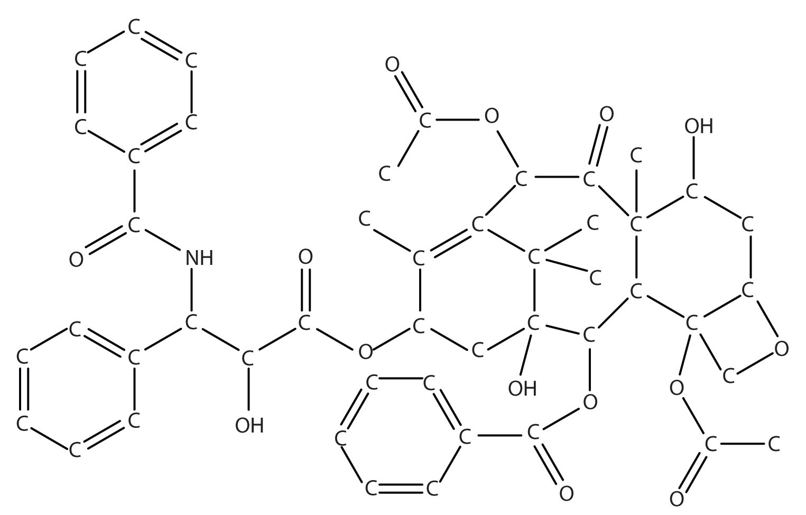

When the disengaged gasses are carefully examined, they are found to weigh 113.7 grs.; these are of two kinds, viz. 144 cubical inches of carbonic acid gas, weighing 100 grs. and 380 cubical inches of a very light gas, weighing only 13.7 grs.…and, when the water which has passed over into the bottle [labeled] H is carefully examined, it is found to have lost 85.7 grs. of its weight. Thus, in this experiment, 85.7 grs. of water, joined to 28 grs. of charcoal, have combined in such a way as to form 100 grs. of carbonic acid, and 13.7 grs. of a particular gas capable of being burnt. (Bold emphasis added.)
In this paragraph from the Elements of Chemistry, Antoine Lavoisier (1743–94) is explaining an experiment in which he was trying to demonstrate that water is not an element but instead is composed of hydrogen (the gas “capable of being burnt”) and oxygen. This is a historical account of a groundbreaking experiment and illustrates the importance of amounts in chemistry. Lavoisier was pointing out that the initial total mass of water and charcoal, 85.7 g plus 28 g, equals the final total mass of carbonic acid and the particular gas, 100 g plus 13.7 g. In this way, he was illustrating the law of conservation of matter, which was introduced in Chapter 5 "Introduction to Chemical Reactions". It is another way of saying that amounts matter.
Amounts do matter and in a variety of circumstances. The chapter-opening essay in Chapter 1 "Chemistry, Matter, and Measurement" tells the story of a nurse who mistakenly read “2–3 mg” as “23 mg” and administered the higher and potentially fatal dose of morphine to a child. Food scientists who work in test kitchens must keep track of specific amounts of ingredients as they develop new products for us to eat. Quality control technicians measure amounts of substances in manufactured products to ensure that the products meet company or government standards. Supermarkets routinely weigh meat and produce and charge consumers by the ounce or the pound.
So far, we have talked about chemical reactions in terms of individual atoms and molecules. Although this works, most of the reactions occurring around us involve much larger amounts of chemicals. Even a tiny sample of a substance will contain millions, billions, or a hundred billion billions of atoms and molecules. How do we compare amounts of substances to each other in chemical terms when it is so difficult to count to a hundred billion billion?
Actually, there are ways to do this, which we will explore in this chapter. In doing so, we will increase our understanding of stoichiometry, which is the study of the numerical relationships between the reactants and the products in a balanced chemical reaction.
Figure 6.1 "Water Molecules" shows that we need 2 hydrogen atoms and 1 oxygen atom to make 1 water molecule. If we want to make 2 water molecules, we will need 4 hydrogen atoms and 2 oxygen atoms. If we want to make 5 molecules of water, we need 10 hydrogen atoms and 5 oxygen atoms. The ratio of atoms we will need to make any number of water molecules is the same: 2 hydrogen atoms to 1 oxygen atom.
Figure 6.1 Water Molecules

The ratio of hydrogen atoms to oxygen atoms used to make water molecules is always 2:1, no matter how many water molecules are being made.
One problem we have, however, is that it is extremely difficult, if not impossible, to organize atoms one at a time. As stated in the introduction, we deal with billions of atoms at a time. How can we keep track of so many atoms (and molecules) at a time? We do it by using mass rather than by counting individual atoms.
A hydrogen atom has a mass of approximately 1 u. An oxygen atom has a mass of approximately 16 u. The ratio of the mass of an oxygen atom to the mass of a hydrogen atom is therefore approximately 16:1.
If we have 2 atoms of each element, the ratio of their masses is approximately 32:2, which reduces to 16:1—the same ratio. If we have 12 atoms of each element, the ratio of their total masses is approximately (12 × 16):(12 × 1), or 192:12, which also reduces to 16:1. If we have 100 atoms of each element, the ratio of the masses is approximately 1,600:100, which again reduces to 16:1. As long as we have equal numbers of hydrogen and oxygen atoms, the ratio of the masses will always be 16:1.
The same consistency is seen when ratios of the masses of other elements are compared. For example, the ratio of the masses of silicon atoms to equal numbers of hydrogen atoms is always approximately 28:1, while the ratio of the masses of calcium atoms to equal numbers of lithium atoms is approximately 40:7.
So we have established that the masses of atoms are constant with respect to each other, as long as we have the same number of each type of atom. Consider a more macroscopic example. If a sample contains 40 g of Ca, this sample has the same number of atoms as there are in a sample of 7 g of Li. What we need, then, is a number that represents a convenient quantity of atoms so we can relate macroscopic quantities of substances. Clearly even 12 atoms are too few because atoms themselves are so small. We need a number that represents billions and billions of atoms.
Chemists use the term moleA number of things equal to 6.022 × 1023 items. to represent a large number of atoms or molecules. Just as a dozen implies 12 things, a mole (mol) represents 6.022 × 1023 things. The number 6.022 × 1023, called Avogadro’s numberThe value 6.022 × 1023. after the 19th-century chemist Amedeo Avogadro, is the number we use in chemistry to represent macroscopic amounts of atoms and molecules. Thus, if we have 6.022 × 1023 O atoms, we say we have 1 mol of O atoms. If we have 2 mol of Na atoms, we have 2 × (6.022 × 1023) Na atoms, or 1.2044 × 1024 Na atoms. Similarly, if we have 0.5 mol of benzene (C6H6) molecules, we have 0.5 × (6.022 × 1023) C6H6 molecules, or 3.011 × 1023 C6H6 molecules.
A mole represents a very large number! If 1 mol of quarters were stacked in a column, it could stretch back and forth between Earth and the sun 6.8 billion times.
Notice that we are applying the mole unit to different types of chemical entities. In these examples, we cited moles of atoms and moles of molecules. The word mole represents a number of things—6.022 × 1023 of them—but does not by itself specify what “they” are. They can be atoms, formula units (of ionic compounds), or molecules. That information still needs to be specified.
Because 1 H2 molecule contains 2 H atoms, 1 mol of H2 molecules (6.022 × 1023 molecules) has 2 mol of H atoms. Using formulas to indicate how many atoms of each element we have in a substance, we can relate the number of moles of molecules to the number of moles of atoms. For example, in 1 mol of ethanol (C2H6O), we can construct the following relationships (Table 6.1 "Molecular Relationships"):
Table 6.1 Molecular Relationships
| 1 Molecule of C2H6O Has | 1 Mol of C2H6O Has | Molecular Relationships |
|---|---|---|
| 2 C atoms | 2 mol of C atoms | or |
| 6 H atoms | 6 mol of H atoms | or |
| 1 O atom | 1 mol of O atoms | or |
The following example illustrates how we can use these relationships as conversion factors.
If a sample consists of 2.5 mol of ethanol (C2H6O), how many moles of carbon atoms, hydrogen atoms, and oxygen atoms does it have?
Solution
Using the relationships in Table 6.1 "Molecular Relationships", we apply the appropriate conversion factor for each element:

Note how the unit mol C2H6O molecules cancels algebraically. Similar equations can be constructed for determining the number of H and O atoms:
If a sample contains 6.75 mol of Na2SO4, how many moles of sodium atoms, sulfur atoms, and oxygen atoms does it have?
The fact that 1 mol equals 6.022 × 1023 items can also be used as a conversion factor.
How many formula units are present in 2.34 mol of NaCl? How many ions are in 2.34 mol?
Solution
Typically in a problem like this, we start with what we are given and apply the appropriate conversion factor. Here, we are given a quantity of 2.34 mol of NaCl, to which we can apply the definition of a mole as a conversion factor:
Because there are two ions per formula unit, there are
in the sample.
How many molecules are present in 16.02 mol of C4H10? How many atoms are in 16.02 mol?
What is a mole?
A mole is 6.022 × 1023 things.
How many dozens are in 1 mol? Express your answer in proper scientific notation.
A gross is a dozen dozen, or 144 things. How many gross are in 1 mol? Express your answer in proper scientific notation.
How many moles of each type of atom are in 1.0 mol of C6H12O6?
How many moles of each type of atom are in 1.0 mol of K2Cr2O7?
How many moles of each type of atom are in 2.58 mol of Na2SO4?
How many moles of each type of atom are in 0.683 mol of C34H32FeN4O4? (This is the formula of heme, a component of hemoglobin.)
How many molecules are in 16.8 mol of H2O?
How many formula units are in 0.778 mol of iron(III) nitrate?
A sample of gold contains 7.02 × 1024 atoms. How many moles of gold is this?
A flask of mercury contains 3.77 × 1022 atoms. How many moles of mercury are in the flask?
An intravenous solution of normal saline may contain 1.72 mol of sodium chloride (NaCl). How many sodium and chlorine atoms are present in the solution?
A lethal dose of arsenic is 1.00 × 1021 atoms. How many moles of arsenic is this?
5.018 × 1022 dozens
6.0 mol of C atoms, 12.0 mol of H atoms, and 6.0 mol of O atoms
5.16 mol of Na atoms, 2.58 mol of S atoms, and 10.32 mol of O atoms
1.012 × 1025 molecules
11.7 mol
1.04 × 1024 Na atoms and 1.04 × 1024 Cl atoms
Now that we have introduced the mole and practiced using it as a conversion factor, we ask the obvious question: why is the mole that particular number of things? Why is it 6.022 × 1023 and not 1 × 1023 or even 1 × 1020?
The number in a mole, Avogadro’s number, is related to the relative sizes of the atomic mass unit and gram mass units. Whereas one hydrogen atom has a mass of approximately 1 u, 1 mol of H atoms has a mass of approximately 1 gram. And whereas one sodium atom has an approximate mass of 23 u, 1 mol of Na atoms has an approximate mass of 23 grams.
One mole of a substance has the same mass in grams that one atom or molecule has in atomic mass units. The numbers in the periodic table that we identified as the atomic masses of the atoms not only tell us the mass of one atom in u but also tell us the mass of 1 mol of atoms in grams.
One mole of a substance has the same mass in grams that one atom or molecule has in atomic mass units.
What is the mass of each quantity?
Solution
What is the mass of each quantity?
1 mol of Au atoms
5 mol of Br atoms
The mole concept can be extended to masses of formula units and molecules as well. The mass of 1 mol of molecules (or formula units) in grams is numerically equivalent to the mass of one molecule (or formula unit) in atomic mass units. For example, a single molecule of O2 has a mass of 32.00 u, and 1 mol of O2 molecules has a mass of 32.00 g. As with atomic mass unit–based masses, to obtain the mass of 1 mol of a substance, we simply sum the masses of the individual atoms in the formula of that substance. The mass of 1 mol of a substance is referred to as its molar massThe mass of 1 mol of atoms or molecules., whether the substance is an element, an ionic compound, or a covalent compound.
What is the mass of 1 mol of each substance?
Solution
Summing the molar masses of the atoms in the NaCl formula unit gives
| 1 Na molar mass: | 23.00 g |
| 1 Cl molar mass: | 35.45 g |
| Total: | 58.45 g |
The mass of 1 mol of NaCl is 58.45 g.
Multiplying the molar mass of each atom by the number of atoms of that type in bilirubin’s formula and adding the results, we get
| 33 C molar mass: | 33 × 12.01 g | 396.33 g |
| 36 H molar mass: | 36 × 1.01 = | 36.36 g |
| 4 N molar mass: | 4 × 14.00 = | 56.00 g |
| 6 O molar mass: | 6 × 16.00 = | 96.00 g |
| Total: | 584.69 g |
The mass of 1 mol of bilirubin is 584.69 g.
What is the mass of 1 mol of each substance?
barium sulfate (BaSO4), used to take X rays of the gastrointestional tract
adenosine (C10H13N5O4), a component of cell nuclei crucial for cell division
Be careful when counting atoms. In formulas with polyatomic ions in parentheses, the subscript outside the parentheses is applied to every atom inside the parentheses. For example, the molar mass of Ba(OH)2 requires the sum of 1 mass of Ba, 2 masses of O, and 2 masses of H:
| 1 Ba molar mass: | 1 × 137.33 g = | 137.33 g |
| 2 O molar mass: | 2 × 16.00 g = | 32.00 g |
| 2 H molar mass: | 2 × 1.01 g = | 2.02 g |
| Total: | 171.35 g |
Because molar mass is defined as the mass for 1 mol of a substance, we can refer to molar mass as grams per mole (g/mol). The division sign (/) implies “per,” and “1” is implied in the denominator. Thus, the molar mass of bilirubin can be expressed as 584.05 g/mol, which is read as “five hundred eighty four point zero five grams per mole.”
How are molar masses of the elements determined?
How are molar masses of compounds determined?
Molar masses of the elements are the same numeric value as the masses of a single atom in atomic mass units but in units of grams instead.
Molar masses of compounds are calculated by adding the molar masses of their atoms.
What is the molar mass of Si? What is the molar mass of U?
What is the molar mass of Mn? What is the molar mass of Mg?
What is the molar mass of FeCl2? What is the molar mass of FeCl3?
What is the molar mass of C6H6? What is the molar mass of C6H5CH3?
What is the molar mass of (NH4)2S? What is the molar mass of Ca(OH)2?
What is the molar mass of (NH4)3PO4? What is the molar mass of Sr(HCO3)2?
Aspirin (C9H8O4) is an analgesic (painkiller) and antipyretic (fever reducer). What is the molar mass of aspirin?
Ibuprofen (C13H18O2) is an analgesic (painkiller). What is the molar mass of ibuprofen?
Morphine (C17H19NO3) is a narcotic painkiller. What is the mass of 1 mol of morphine?
Heroin (C21H23NO5) is a narcotic drug that is a derivative of morphine. What is the mass of 1 mol of heroin?
28.09 g/mol; 238.00 g/mol
126.75 g/mol; 162.20 g/mol
68.15 g/mol; 74.10 g/mol
180.17 g/mol
285.36 g
Example 3 in Section 6.2 "Atomic and Molar Masses" stated that the mass of 2 mol of U is twice the molar mass of uranium. Such a straightforward exercise does not require any formal mathematical treatment. Many questions concerning mass are not so straightforward, however, and require some mathematical manipulations.
The simplest type of manipulation using molar mass as a conversion factor is a mole-mass conversionThe conversion from moles of material to the mass of that same material. (or its reverse, a mass-mole conversion). In such a conversion, we use the molar mass of a substance as a conversion factor to convert mole units into mass units (or, conversely, mass units into mole units).
We established that 1 mol of Al has a mass of 26.98 g (Example 3 in Section 6.2 "Atomic and Molar Masses"). Stated mathematically,
1 mol Al = 26.98 g AlWe can divide both sides of this expression by either side to get one of two possible conversion factors:
The first conversion factor can be used to convert from mass to moles, and the second converts from moles to mass. Both can be used to solve problems that would be hard to do “by eye.”
The algebra skills we are using here are the same skills that we used in Chapter 1 "Chemistry, Matter, and Measurement" to perform unit conversions.
What is the mass of 3.987 mol of Al?
Solution
The first step in a conversion problem is to decide what conversion factor to use. Because we are starting with mole units, we want a conversion factor that will cancel the mole unit and introduce the unit for mass in the numerator. Therefore, we should use the conversion factor. We start with the given quantity and multiply by the conversion factor:
Note that the mol units cancel algebraically. (The quantity 3.987 mol is understood to be in the numerator of a fraction that has 1 in the unwritten denominator.) Canceling and solving gives
Our final answer is expressed to four significant figures.
How many moles are present in 100.0 g of Al? (Hint: you will have to use the other conversion factor we obtained for aluminum.)
Conversions like this are possible for any substance, as long as the proper atomic mass, formula mass, or molar mass is known (or can be determined) and expressed in grams per mole. Figure 6.2 "A Simple Flowchart for Converting between Mass and Moles of a Substance" is a chart for determining what conversion factor is needed, and Figure 6.3 "A Flowchart Illustrating the Steps in Performing a Unit Conversion" is a flow diagram for the steps needed to perform a conversion.
Figure 6.2 A Simple Flowchart for Converting between Mass and Moles of a Substance

It takes one mathematical step to convert from moles to mass or from mass to moles.
Figure 6.3 A Flowchart Illustrating the Steps in Performing a Unit Conversion

When performing many unit conversions, the same logical steps can be taken.
A biochemist needs 0.00655 mol of bilirubin (C33H36N4O6) for an experiment. How many grams of bilirubin will that be?
Solution
To convert from moles to mass, we need the molar mass of bilirubin, which we can determine from its chemical formula:
| 33 C molar mass: | 33 × 12.01 g = | 396.33 g |
| 36 H molar mass: | 36 × 1.01 g = | 36.36 g |
| 4 N molar mass: | 4 × 14.00 g = | 56.00 g |
| 6 O molar mass: | 6 × 16.00 g = | 96.00 g |
| Total: | 584.69 g |
The molar mass of bilirubin is 584.69 g. (We did this calculation in Example 4 in Section 6.2 "Atomic and Molar Masses".) Using the relationship
1 mol bilirubin = 584.69 g bilirubinwe can construct the appropriate conversion factor for determining how many grams there are in 0.00655 mol. Following the steps from Figure 6.3 "A Flowchart Illustrating the Steps in Performing a Unit Conversion":
The mol bilirubin unit cancels. The biochemist needs 3.83 g of bilirubin.
A chemist needs 457.8 g of KMnO4 to make a solution. How many moles of KMnO4 is that?
For our bodies to function properly, we need to ingest certain substances from our diets. Among our dietary needs are minerals, the noncarbon elements our body uses for a variety of functions, such developing bone or ensuring proper nerve transmission.
The US Department of Agriculture has established some recommendations for the RDIs of various minerals. The accompanying table lists the RDIs for minerals, both in mass and moles, assuming a 2,000-calorie daily diet.
| Mineral | Male (age 19–30 y) | Female (age 19–30 y) | ||
|---|---|---|---|---|
| Ca | 1,000 mg | 0.025 mol | 1,000 mg | 0.025 mol |
| Cr | 35 µg | 6.7 × 10−7 mol | 25 µg | 4.8 × 10−7 mol |
| Cu | 900 µg | 1.4 × 10−5 mol | 900 µg | 1.4 × 10−5 mol |
| F | 4 mg | 2.1 × 10−4 mol | 3 mg | 1.5 × 10−4 mol |
| I | 150 µg | 1.2 × 10−6 mol | 150 µg | 1.2 × 10−6 mol |
| Fe | 8 mg | 1.4 × 10−4 mol | 18 mg | 3.2 × 10−4 mol |
| K | 3,500 mg | 9.0 × 10−2 mol | 3,500 mg | 9.0 × 10−2 mol |
| Mg | 400 mg | 1.6 × 10−2 mol | 310 mg | 1.3 × 10−2 mol |
| Mn | 2.3 mg | 4.2 × 10−5 mol | 1.8 mg | 3.3 × 10−5 mol |
| Mo | 45 mg | 4.7 × 10−7 mol | 45 mg | 4.7 × 10−7 mol |
| Na | 2,400 mg | 1.0 × 10−1 mol | 2,400 mg | 1.0 × 10−1 mol |
| P | 700 mg | 2.3 × 10−2 mol | 700 mg | 2.3 × 10−2 mol |
| Se | 55 µg | 7.0 × 10−7 mol | 55 µg | 7.0 × 10−7 mol |
| Zn | 11 mg | 1.7 × 10−4 mol | 8 mg | 1.2 × 10−4 mol |
This table illustrates several things. First, the needs of men and women for some minerals are different. The extreme case is for iron; women need over twice as much as men do. In all other cases where there is a different RDI, men need more than women.
Second, the amounts of the various minerals needed on a daily basis vary widely—both on a mass scale and a molar scale. The average person needs 0.1 mol of Na a day, which is about 2.5 g. On the other hand, a person needs only about 25–35 µg of Cr per day, which is under one millionth of a mole. As small as this amount is, a deficiency of chromium in the diet can lead to diabetes-like symptoms or neurological problems, especially in the extremities (hands and feet). For some minerals, the body does not require much to keep itself operating properly.
Although a properly balanced diet will provide all the necessary minerals, some people take dietary supplements. However, too much of a good thing, even minerals, is not good. Exposure to too much chromium, for example, causes a skin irritation, and certain forms of chromium are known to cause cancer (as presented in the movie Erin Brockovich).
What relationship is needed to perform mole-mass conversions?
What information determines which conversion factor is used in a mole-mass conversion?
The atomic or molar mass is needed for a mole-mass conversion.
The unit of the initial quantity determines which conversion factor is used.
What is the mass of 8.603 mol of Fe metal?
What is the mass of 0.552 mol of Ag metal?
What is the mass of 6.24 × 104 mol of Cl2 gas?
What is the mass of 0.661 mol of O2 gas?
What is the mass of 20.77 mol of CaCO3?
What is the mass of 9.02 × 10−3 mol of the hormone epinephrine (C9H13NO3)?
How many moles are present in 977.4 g of NaHCO3?
How many moles of erythromycin (C37H67NO13), a widely used antibiotic, are in 1.00 × 103 g of the substance?
Cortisone (C21H28O5) is a synthetic steroid that is used as an anti-inflammatory drug. How many moles of cortisone are present in one 10.0 mg tablet?
Recent research suggests that the daily ingestion of 85 mg of aspirin (also known as acetylsalicylic acid, C9H8O4) will reduce a person’s risk of heart disease. How many moles of aspirin is that?
480.5 g
4.42 × 106 g
2,079 g
11.63 mol
2.77 × 10−5 mol
In Chapter 5 "Introduction to Chemical Reactions", you learned to balance chemical equations by comparing the numbers of each type of atom in the reactants and products. The coefficients in front of the chemical formulas represent the numbers of molecules or formula units (depending on the type of substance). Here, we will extend the meaning of the coefficients in a chemical equation.
Consider the simple chemical equation
2H2 + O2 → 2H2OThe convention for writing balanced chemical equations is to use the lowest whole-number ratio for the coefficients. However, the equation is balanced as long as the coefficients are in a 2:1:2 ratio. For example, this equation is also balanced if we write it as
4H2 + 2O2 → 4H2OThe ratio of the coefficients is 4:2:4, which reduces to 2:1:2. The equation is also balanced if we were to write it as
22H2 + 11O2 → 22H2Obecause 22:11:22 also reduces to 2:1:2.
Suppose we want to use larger numbers. Consider the following coefficients:
12.044 × 1023 H2 + 6.022 × 1023 O2 → 12.044 × 1023 H2OThese coefficients also have the ratio 2:1:2 (check it and see), so this equation is balanced. But 6.022 × 1023 is 1 mol, while 12.044 × 1023 is 2 mol (and the number is written that way to make this more obvious), so we can simplify this version of the equation by writing it as
2 mol H2 + 1 mol O2 → 2 mol H2OWe can leave out the word mol and not write the 1 coefficient (as is our habit), so the final form of the equation, still balanced, is
2H2 + O2 → 2H2ONow we interpret the coefficients as referring to molar amounts, not individual molecules. The lesson? Balanced chemical equations are balanced not only at the molecular level but also in terms of molar amounts of reactants and products. Thus, we can read this reaction as “two moles of hydrogen react with one mole of oxygen to produce two moles of water.”
By the same token, the ratios we constructed in Chapter 5 "Introduction to Chemical Reactions" can also be constructed in terms of moles rather than molecules. For the reaction in which hydrogen and oxygen combine to make water, for example, we can construct the following ratios:
We can use these ratios to determine what amount of a substance, in moles, will react with or produce a given number of moles of a different substance. The study of the numerical relationships between the reactants and the products in balanced chemical reactions is called stoichiometry.
How many moles of oxygen react with hydrogen to produce 27.6 mol of H2O? The balanced equation is as follows:
2H2 + O2 → 2H2OSolution
Because we are dealing with quantities of H2O and O2, we will use a ratio that relates those two substances. Because we are given an amount of H2O and want to determine an amount of O2, we will use the ratio that has H2O in the denominator (so it cancels) and O2 in the numerator (so it is introduced in the answer). Thus,
To produce 27.6 mol of H2O, 13.8 mol of O2 react.
Using 2H2 + O2 → 2H2O, how many moles of hydrogen react with 3.07 mol of oxygen to produce H2O?
How do we relate molar amounts of substances in chemical reactions?
Amounts of substances in chemical reactions are related by their coefficients in the balanced chemical equation.
List the molar ratios you can derive from this balanced chemical equation:
NH3 + 2O2 → HNO3 + H2OList the molar ratios you can derive from this balanced chemical equation
2C2H2 + 5O2 → 4CO2 + 2H2OGiven the following balanced chemical equation,
6NaOH + 3Cl2 → NaClO3 + 5NaCl + 3H2Ohow many moles of NaCl can be formed if 3.77 mol of NaOH were to react?
Given the following balanced chemical equation,
C5H12 + 8O2 → 5CO2 + 6H2Ohow many moles of H2O can be formed if 0.0652 mol of C5H12 were to react?
Balance the following unbalanced equation and determine how many moles of H2O are produced when 1.65 mol of NH3 react.
NH3 + O2 → N2 + H2OTrinitrotoluene [C6H2(NO2)2CH3], also known as TNT, is formed by reacting nitric acid (HNO3) with toluene (C6H5CH3):
HNO3 + C6H5CH3 → C6H2(NO2)2CH3 + H2OBalance the equation and determine how many moles of TNT are produced when 4.903 mol of HNO3 react.
Chemical reactions are balanced in terms of molecules and in terms of moles. Are they balanced in terms of dozens? Defend your answer.
Explain how a chemical reaction balanced in terms of moles satisfies the law of conservation of matter.
1 mol NH3:2 mol O2:1 mol HNO3:1 mol H2O
3.14 mol
4NH3 + 3O2 → 2N2 + 6H2O; 2.48 mol
Yes, they are still balanced.
We have established that a balanced chemical equation is balanced in terms of moles as well as atoms or molecules. We have used balanced equations to set up ratios, now in terms of moles of materials, that we can use as conversion factors to answer stoichiometric questions, such as how many moles of substance A react with so many moles of reactant B. We can extend this technique even further. Recall that we can relate a molar amount to a mass amount using molar mass. We can use that ability to answer stoichiometry questions in terms of the masses of a particular substance, in addition to moles. We do this using the following sequence:
Collectively, these conversions are called mole-mass calculationsA stoichiometry calculation converting between masses and moles of different substances in a chemical reaction..
As an example, consider the balanced chemical equation
Fe2O3 + 3SO3 → Fe2(SO4)3If we have 3.59 mol of Fe2O3, how many grams of SO3 can react with it? Using the mole-mass calculation sequence, we can determine the required mass of SO3 in two steps. First, we construct the appropriate molar ratio, determined from the balanced chemical equation, to calculate the number of moles of SO3 needed. Then using the molar mass of SO3 as a conversion factor, we determine the mass that this number of moles of SO3 has.
The first step resembles the exercises we did in Section 6.4 "Mole-Mole Relationships in Chemical Reactions". As usual, we start with the quantity we were given:
The mol Fe2O3 units cancel, leaving mol SO3 unit. Now, we take this answer and convert it to grams of SO3, using the molar mass of SO3 as the conversion factor:
Our final answer is expressed to three significant figures. Thus, in a two-step process, we find that 862 g of SO3 will react with 3.59 mol of Fe2O3. Many problems of this type can be answered in this manner.
The same two-step problem can also be worked out in a single line, rather than as two separate steps, as follows:
We get exactly the same answer when combining all the math steps together as we do when we calculate one step at a time.
How many grams of CO2 are produced if 2.09 mol of HCl are reacted according to this balanced chemical equation?
CaCO3 + 2HCl → CaCl2 + CO2 + H2OSolution
Our strategy will be to convert from moles of HCl to moles of CO2 and then from moles of CO2 to grams of CO2. We will need the molar mass of CO2, which is 44.01 g/mol. Performing these two conversions in a single-line gives 46.0 g of CO2:
The molar ratio between CO2 and HCl comes from the balanced chemical equation.
How many grams of glucose (C6H12O6) are produced if 17.3 mol of H2O are reacted according to this balanced chemical equation?
6CO2 + 6H2O → C6H12O6 + 6O2It is a small step from mole-mass calculations to mass-mass calculationsA stoichiometry calculation converting between the mass of one substance and the mass of a different substance in a chemical reaction.. If we start with a known mass of one substance in a chemical reaction (instead of a known number of moles), we can calculate the corresponding masses of other substances in the reaction. The first step in this case is to convert the known mass into moles, using the substance’s molar mass as the conversion factor. Then—and only then—we use the balanced chemical equation to construct a conversion factor to convert that quantity to moles of another substance, which in turn can be converted to a corresponding mass. Sequentially, the process is as follows:
This three-part process can be carried out in three discrete steps or combined into a single calculation that contains three conversion factors. The following example illustrates both techniques.
Methane can react with elemental chlorine to make carbon tetrachloride (CCl4). The balanced chemical equation is as follows:
CH4 + 4Cl2 → CCl4 + 4HClHow many grams of HCl are produced by the reaction of 100.0 g of CH4?
Solution
First, let us work the problem in stepwise fashion. We begin by converting the mass of CH4 to moles of CH4, using the molar mass of CH4 (16.05 g/mol) as the conversion factor:
Note that we inverted the molar mass so that the gram units cancel, giving us an answer in moles. Next, we use the balanced chemical equation to determine the ratio of moles CH4 and moles HCl and convert our first result into moles of HCl:
Finally, we use the molar mass of HCl (36.46 g/mol) as a conversion factor to calculate the mass of 24.92 mol of HCl:
In each step, we have limited the answer to the proper number of significant figures. If desired, we can do all three conversions on a single line:
This final answer is slightly different from our first answer because only the final answer is restricted to the proper number of significant figures. In the first answer, we limited each intermediate quantity to the proper number of significant figures. As you can see, both answers are essentially the same.
The oxidation of propanal (CH3CH2CHO) to propionic acid (CH3CH2COOH) has the following chemical equation:
CH3CH2CHO + 2K2Cr2O7 → CH3CH2COOH + other productsHow many grams of propionic acid are produced by the reaction of 135.8 g of K2Cr2O7?
What is the general sequence of conversions for a mole-mass calculation?
What is the general sequence of conversions for a mass-mass calculation?
mol first substance → mol second substance → mass second substance
mass first substance → mol first substance → mol second substance → mass second substance
Taxol is a powerful anticancer drug that was originally extracted from the Pacific yew tree (Taxus brevifolia). As you can see from the accompanying figure, taxol is a very complicated molecule, with a molecular formula of C47H51NO14. Isolating taxol from its natural source presents certain challenges, mainly that the Pacific yew is a slow-growing tree, and the equivalent of six trees must be harvested to provide enough taxol to treat a single patient. Although related species of yew trees also produce taxol in small amounts, there is significant interest in synthesizing this complex molecule in the laboratory.
After a 20-year effort, two research groups announced the complete laboratory synthesis of taxol in 1994. However, each synthesis required over 30 separate chemical reactions, with an overall efficiency of less than 0.05%. To put this in perspective, to obtain a single 300 mg dose of taxol, you would have to begin with 600 g of starting material. To treat the 26,000 women who are diagnosed with ovarian cancer each year with one dose, almost 16,000 kg (over 17 tons) of starting material must be converted to taxol. Taxol is also used to treat breast cancer, with which 200,000 women in the United States are diagnosed every year. This only increases the amount of starting material needed.
Clearly, there is intense interest in increasing the overall efficiency of the taxol synthesis. An improved synthesis not only will be easier but also will produce less waste materials, which will allow more people to take advantage of this potentially life-saving drug.
Figure 6.4 The Structure of the Cancer Drug Taxol
Because of the complexity of the molecule, hydrogen atoms are not shown, but they are present on every atom to give the atom the correct number of covalent bonds (four bonds for each carbon atom).
Given the following unbalanced chemical equation,
H3PO4 + NaOH → H2O + Na3PO4what mass of H2O is produced by the reaction of 2.35 mol of H3PO4?
Given the following unbalanced chemical equation,
C2H6 + Br2 → C2H4Br2 + HBrwhat mass of HBr is produced if 0.884 mol of C2H6 is reacted?
Certain fats are used to make soap, the first step being to react the fat with water to make glycerol (also known as glycerin) and compounds called fatty acids. One example is as follows:
How many moles of glycerol can be made from the reaction of 1,000.0 g of C3H5(OOC(CH2)14CH3)3?
Photosynthesis in plants leads to the general overall reaction for producing glucose (C6H12O6):
6CO2 + 6H2O → C6H12O6 + 6O2How many moles of glucose can be made from the reaction of 544 g of CO2?
Precipitation reactions, in which a solid (called a precipitate) is a product, are commonly used to remove certain ions from solution. One such reaction is as follows:
Ba(NO3)2(aq) + Na2SO4(aq) → BaSO4(s) + 2NaNO3(aq)How many grams of Na2SO4 are needed to precipitate all the barium ions produced by 43.9 g of Ba(NO3)2?
Nitroglycerin [C3H5(ONO2)3] is made by reacting nitric acid (HNO3) with glycerol [C3H5(OH)3] according to this reaction:
C3H5(OH)3 + 3HNO3 → C3H5(ONO2)3 + 3H2OIf 87.4 g of HNO3 are reacted with excess glycerol, what mass of nitroglycerin can be made?
Antacids are bases that neutralize acids in the digestive tract. Magnesium hydroxide [Mg(OH)2] is one such antacid. It reacts with hydrochloric acid in the stomach according to the following reaction:
Mg(OH)2 + 2HCl → MgCl2 + 2H2OHow many grams of HCl can a 200 mg dose of Mg(OH)2 neutralize?
Acid rain is caused by the reaction of nonmetal oxides with water in the atmosphere. One such reaction involves nitrogen dioxide (NO2) and produces nitric acid (HNO3):
3NO2 + H2O → 2HNO3 + NOIf 1.82 × 1013 g of NO2 enter the atmosphere every year due to human activities, potentially how many grams of HNO3 can be produced annually?
A simplified version of the processing of iron ore into iron metal is as follows:
2Fe2O3 + 3C → 4Fe + 3CO2How many grams of C are needed to produce 1.00 × 109 g of Fe?
The SS Hindenburg contained about 5.33 × 105 g of H2 gas when it burned at Lakehurst, New Jersey, in 1937. The chemical reaction is as follows:
2H2 + O2 → 2H2OHow many grams of H2O were produced?
127 g
1.236 mol
23.9 g
0.251 g
1.61 × 108 g
To ensure that you understand the material in this chapter, you should review the meanings of the following bold terms in the following summary and ask yourself how they relate to the topics in the chapter.
Chemical reactions relate quantities of reactants and products. Chemists use the mole unit to represent 6.022 × 1023 things, whether the things are atoms of elements or molecules of compounds. This number, called Avogadro’s number, is important because this number of atoms or molecules has the same mass in grams as one atom or molecule has in atomic mass units. Molar masses of substances can be determined by summing the appropriate masses from the periodic table; the final molar mass will have units of grams.
Because one mole of a substance will have a certain mass, we can use that relationship to construct conversion factors that will convert a mole amount into a mass amount, or vice versa. Such mole-mass conversions typically take one algebraic step.
Chemical reactions list reactants and products in molar amounts, not just molecular amounts. We can use the coefficients of a balanced chemical equation to relate moles of one substance in the reaction to moles of other substances (stoichiometry). In a mole-mass calculation, we relate the number of moles of one substance to the mass of another substance. In a mass-mass calculation, we relate the mass of one substance to the mass of another substance.
If the average male has a body mass of 70 kg, of which 60% is water, how many moles of water are in an average male?
If the average female is 60.0 kg and contains 0.00174% iron, how many moles of iron are in an average female?
How many moles of each element are present in 2.67 mol of each compound?
How many moles of each element are present in 0.00445 mol of each compound?
What is the mass of one hydrogen atom in grams? What is the mass of one oxygen atom in grams? Do these masses have a 1:16 ratio, as expected?
What is the mass of one sodium atom in grams?
If 6.63 × 10−6 mol of a compound has a mass of 2.151 mg, what is the molar mass of the compound?
Hemoglobin (molar mass is approximately 64,000 g/mol) is the major component of red blood cells that transports oxygen and carbon dioxide in the body. How many moles are in 0.034 g of hemoglobin?
2,330 mol
H = 1.66 × 10−24 g and O = 2.66 × 10−23 g; yes, they are in a 1:16 ratio.
324 g/mol